コード
pacman::p_load(
tidyverse,
gt,
eRm,
mirt,
TAM,
sirt,
psych,
glue,
scales
)
set.seed(2024)
theme_set(theme_bw(base_size = 12))
theme_update(legend.position = "bottom")5章・6章で扱ったロジスティック回帰では、「ある説明変数が正答確率にどう影響するか」をモデル化しました。しかし教育テストでは、同じ受験者が複数の項目に回答するため、「どの項目が難しいか」と「誰が高能力か」を同時に推定したい場面が頻出します。
項目応答理論（Item Response Theory; IRT）は、この要請に直接応える枠組みです。受験者の潜在能力（()）と項目特性（困難度・識別力）を同時にモデル化し、「誰にとって、どの項目が、どれくらい難しいか」を推定します(Cai et al., 2016)。特にラッシュモデル（1PL）は、測定モデルとしての単純さ、項目母数の不変性、教育評価における解釈しやすさのため、言語テスト研究で広く利用されています(Andersen, 1973; Boone et al., 2017; Rasch, 1980)。
「同じ合計点の受験者が、本当に同じ能力なのかは、どの項目を正解したかを考慮しないと判断できない。」
\[ P(X_{ij}=1\mid \theta_i, b_j)=\frac{\exp(\theta_i-b_j)}{1+\exp(\theta_i-b_j)} \]
正答確率は、受験者能力 (_i) と項目困難度 (b_j) の差だけで決まります。
eRm で Rasch 推定 → 適合度 → Wright Map まで一気に実行する。eRm を使って Rasch モデルを推定し、項目困難度・適合度を解釈できる。pacman::p_load(
tidyverse,
gt,
eRm,
mirt,
TAM,
sirt,
psych,
glue,
scales
)
set.seed(2024)
theme_set(theme_bw(base_size = 12))
theme_update(legend.position = "bottom")言語テスト研究における IRT/Rasch の主要応用を先に概観しておくと、本章の位置づけが明確になります。
literature_map <- tibble::tribble(
~Study, ~Context, ~MainUse, ~PracticalImplication,
"Boone (2016)", "理科教育における尺度開発", "Rasch適合度とWright Mapによる項目評価",
"適合度の閾値を機械的に適用せず、内容妥当性と併用する重要性を提示",
"Runnels (2013)", "EFL語彙テストのDIF検出", "多群Raschモデルによる公平性検証",
"L1背景によるDIFをアンカー浄化付きで検出する手順を示す",
"Ha & Yaneva (2021)", "大規模英語検定の項目分析", "Rasch + 2PLによる項目バンク管理",
"項目母数の不変性を利用した等化・項目プール管理の実務例",
"McNamara & Knoch (2012)", "言語テストにおけるRasch採用史", "Rasch測定の哲学的議論",
"記述的IRT vs 規範的Raschの立場の違いを整理",
"Aryadoust et al. (2021)", "応用言語学21誌のレビュー(215論文)", "Rasch/MFRM/IRTの研究動向分析",
"ライティング評価でMFRMが最頻、文法評価は研究が少ないことを指摘"
)
literature_map |>
gt() |>
tab_header(
title = "Research Map: IRT/Rasch in Language Testing",
subtitle = "How prior studies inform the workflow in this chapter"
) |>
cols_label(
Study = "Study",
Context = "Context",
MainUse = "How IRT/Rasch was used",
PracticalImplication = "Implication for your research"
)| Research Map: IRT/Rasch in Language Testing | |||
| How prior studies inform the workflow in this chapter | |||
| Study | Context | How IRT/Rasch was used | Implication for your research |
|---|---|---|---|
| Boone (2016) | 理科教育における尺度開発 | Rasch適合度とWright Mapによる項目評価 | 適合度の閾値を機械的に適用せず、内容妥当性と併用する重要性を提示 |
| Runnels (2013) | EFL語彙テストのDIF検出 | 多群Raschモデルによる公平性検証 | L1背景によるDIFをアンカー浄化付きで検出する手順を示す |
| Ha & Yaneva (2021) | 大規模英語検定の項目分析 | Rasch + 2PLによる項目バンク管理 | 項目母数の不変性を利用した等化・項目プール管理の実務例 |
| McNamara & Knoch (2012) | 言語テストにおけるRasch採用史 | Rasch測定の哲学的議論 | 記述的IRT vs 規範的Raschの立場の違いを整理 |
| Aryadoust et al. (2021) | 応用言語学21誌のレビュー(215論文) | Rasch/MFRM/IRTの研究動向分析 | ライティング評価でMFRMが最頻、文法評価は研究が少ないことを指摘 |
先行研究マップが示すように、IRT/Rasch は言語テスト研究で項目評価・公平性検証・尺度開発に広く活用されています。これらの研究がどのような問題意識から出発しているかを踏まえ、まず CTT と IRT の根本的な違いを確認します。
ここで具体的な場面を考えてみましょう。500人の EFL 学習者に語彙テスト（20項目）を実施したとします。受験者 A と受験者 B はどちらも合計12点でした。CTT ではこの2名は「同じ得点」として扱われます。しかし、A は易しい項目ばかり正解し、B は難しい項目を多く正解していたとしたらどうでしょうか。実際の語彙力に差がある可能性が高いのに、合計点だけではそれが見えません。
IRT はまさにこの問題を解決します。「どの項目を正解したか」というパターン情報を使い、受験者能力と項目困難度を分離して推定します(Cai et al., 2016; Mair & Hatzinger, 2007; Rasch, 1980)。
comparison_tbl <- tibble(
Aspect = c(
"基本単位",
"スコア解釈",
"精度の扱い",
"等化・フォーム間比較",
"典型的なR実装"
),
CTT = c(
"合計点・平均点",
"テスト全体の相対位置",
"全体で1つの信頼性係数を報告しやすい",
"追加の仮定や手続きが必要",
"psych::alpha(), item-total 相関"
),
IRT = c(
"項目反応パターン（0/1, 多値）",
"潜在能力(θ)と項目特性(b, a など)",
"能力水準ごとの情報量（測定精度）を評価可能",
"項目母数に基づく等化が可能",
"eRm::RM(), mirt::mirt()"
)
)
comparison_tbl |>
gt() |>
tab_header(
title = "CTT vs IRT",
subtitle = "Practical Differences for Language Testing"
) |>
cols_label(
Aspect = "観点",
CTT = "古典的テスト理論 (CTT)",
IRT = "項目応答理論 (IRT)"
)| CTT vs IRT | ||
| Practical Differences for Language Testing | ||
| 観点 | 古典的テスト理論 (CTT) | 項目応答理論 (IRT) |
|---|---|---|
| 基本単位 | 合計点・平均点 | 項目反応パターン（0/1, 多値） |
| スコア解釈 | テスト全体の相対位置 | 潜在能力(θ)と項目特性(b, a など) |
| 精度の扱い | 全体で1つの信頼性係数を報告しやすい | 能力水準ごとの情報量（測定精度）を評価可能 |
| 等化・フォーム間比較 | 追加の仮定や手続きが必要 | 項目母数に基づく等化が可能 |
| 典型的なR実装 | psych::alpha(), item-total 相関 | eRm::RM(), mirt::mirt() |
この表のポイントは、CTT が「テスト全体のスコア」に焦点を当てるのに対し、IRT は「各項目と各受験者のレベルでの確率モデル」を構築する点です。IRT では、能力水準ごとに測定精度（情報量）を評価できるため、テストがどの能力帯で精密に測れているかを可視化できます。
次の2名は「合計点が同じ（3/6点）」ですが、正解した項目の難しさが異なります。 このとき CTT では同点でも、IRT（Rasch）では推定能力が異なることが示せます。
mini_b <- c(-2.0, -1.0, -0.5, 0.5, 1.0, 2.0)
x_A <- c(1, 1, 1, 0, 0, 0) # 易しい項目中心に正解
x_B <- c(0, 0, 0, 1, 1, 1) # 難しい項目中心に正解
rasch_mle_theta <- function(x, b) {
opt <- optimize(
f = function(th) {
-sum(x * (th - b) - log1p(exp(th - b)))
},
interval = c(-6, 6)
)
opt$minimum
}
mini_tbl <- tibble(
person = c("A (easy items correct)", "B (hard items correct)"),
response_pattern = c(paste0(x_A, collapse = ""), paste0(x_B, collapse = "")),
total_score = c(sum(x_A), sum(x_B)),
theta_mle = c(rasch_mle_theta(x_A, mini_b), rasch_mle_theta(x_B, mini_b))
)
mini_tbl |>
gt() |>
tab_header(
title = "Same Total Score, Different Rasch Ability",
subtitle = "CTT treats both as tie; IRT distinguishes by item difficulty"
) |>
fmt_number(columns = theta_mle, decimals = 3)| Same Total Score, Different Rasch Ability | |||
| CTT treats both as tie; IRT distinguishes by item difficulty | |||
| person | response_pattern | total_score | theta_mle |
|---|---|---|---|
| A (easy items correct) | 111000 | 3 | 0.000 |
| B (hard items correct) | 000111 | 3 | 0.000 |
上表は「なぜ IRT が項目難易度を明示的に扱うのか」を最短で示す例です。
合計点が同じでも、どの項目を正解したかで能力推定は変わり得る点が、CTTとの差になります。
前節で CTT と IRT の違いを確認しました。ここでは、5章・6章で馴染みのあるロジスティック回帰から、Rasch モデルへ1ステップで橋渡しします。
まず、テストデータを「受験者×項目」のロング形式に変換し、項目をダミー変数として通常のロジスティック回帰を当ててみましょう。これは「項目ごとに正答しやすさが違う」ことをモデル化する、最も素朴なアプローチです。
# 後のセクションで使うシミュレーションデータを先に作成
n_person_pre <- 500
n_item_pre <- 20
b_pre <- seq(-2, 2, length.out = n_item_pre)
theta_pre <- rnorm(n_person_pre, mean = 0, sd = 1)
eta_pre <- outer(theta_pre, b_pre, "-")
prob_pre <- plogis(eta_pre)
resp_pre <- matrix(rbinom(n_person_pre * n_item_pre, 1, prob_pre),
nrow = n_person_pre, ncol = n_item_pre)
colnames(resp_pre) <- paste0("Item", sprintf("%02d", 1:n_item_pre))
resp_df_pre <- as.data.frame(resp_pre)
# ロング形式に変換
long_df <- resp_df_pre |>
mutate(person = row_number()) |>
pivot_longer(-person, names_to = "item", values_to = "response")
# 素朴なロジスティック回帰（項目効果のみ）
glm_fit <- glm(response ~ 0 + item, family = binomial, data = long_df)
# Rasch推定（eRm）
rasch_fit_pre <- eRm::RM(resp_df_pre)
# 係数を比較
bridge_tbl <- tibble(
item = colnames(resp_df_pre),
glm_logit = coef(glm_fit)[paste0("item", colnames(resp_df_pre))],
rasch_beta = -as.numeric(coef(rasch_fit_pre)),
true_b = b_pre
) |>
mutate(
glm_logit = round(glm_logit, 3),
rasch_beta = round(rasch_beta, 3),
true_b = round(true_b, 3)
)
bridge_tbl |>
gt() |>
tab_header(
title = "glm() Coefficients vs Rasch Difficulty",
subtitle = "The logistic regression bridge to IRT"
) |>
cols_label(
item = "Item",
glm_logit = "glm() log-odds",
rasch_beta = "Rasch difficulty (b)",
true_b = "True difficulty"
)| glm() Coefficients vs Rasch Difficulty | |||
| The logistic regression bridge to IRT | |||
| Item | glm() log-odds | Rasch difficulty (b) | True difficulty |
|---|---|---|---|
| Item01 | 1.866 | -2.145 | -2.000 |
| Item02 | 1.629 | -1.877 | -1.789 |
| Item03 | 1.374 | -1.583 | -1.579 |
| Item04 | 1.231 | -1.417 | -1.368 |
| Item05 | 0.866 | -0.985 | -1.158 |
| Item06 | 0.838 | -0.951 | -0.947 |
| Item07 | 0.593 | -0.656 | -0.737 |
| Item08 | 0.524 | -0.573 | -0.526 |
| Item09 | 0.241 | -0.229 | -0.316 |
| Item10 | 0.152 | -0.121 | -0.105 |
| Item11 | -0.008 | 0.074 | 0.105 |
| Item12 | -0.144 | 0.240 | 0.316 |
| Item13 | -0.347 | 0.488 | 0.526 |
| Item14 | -0.602 | 0.795 | 0.737 |
| Item15 | -0.772 | 0.999 | 0.947 |
| Item16 | -0.838 | 1.077 | 1.158 |
| Item17 | -1.186 | 1.487 | 1.368 |
| Item18 | -1.231 | 1.540 | 1.579 |
| Item19 | -1.463 | 1.807 | 1.789 |
| Item20 | -1.658 | 2.029 | 2.000 |
上表で glm() の log-odds と Rasch の困難度推定は近い値になります。これは偶然ではありません。
glm(response ~ 0 + item) は「全受験者が同じ能力」と暗に仮定し、項目の正答しやすさだけを推定します。つまり Rasch は、ロジスティック回帰に受験者ごとの潜在能力を加えた拡張です。数式で書けば、glm() の logit(P) = β_j（項目効果のみ）を logit(P) = θ_i - b_j（受験者効果 + 項目効果）に拡張しただけです。
2値 Rasch モデルは次式で表されます(Andersen, 1973; Rasch, 1980)。
\[ P(X_{ij}=1\mid \theta_i, b_j)=\frac{\exp(\theta_i-b_j)}{1+\exp(\theta_i-b_j)} \]
ここで、
です。言い換えれば、正答確率は受験者能力と項目困難度の差だけで決まるロジスティック関数です。
IRT には2つの立場があります(Boone et al., 2017)。
Rasch モデルでは、識別力を等しいと仮定する（1PL）ことで、項目母数の不変性（標本によらない推定）と合計点の十分統計量性が保証されます。英語教育テストでは、異なる受験者集団間でも項目パラメータが安定していることが実務上重要であり、この規範的アプローチが広く採用されています。
Rasch では識別力を等しいと仮定する点が、2PL と異なります(Birnbaum, 1968)。2PL/3PL への拡張は本章後半で扱います。
Rasch モデルの尤度は、受験者と項目の全反応行列 (X=(x_{ij})) について
\[ L(\boldsymbol{\theta}, \mathbf{b}\mid X) =\prod_{i=1}^{N}\prod_{j=1}^{J} \frac{\exp\{x_{ij}(\theta_i-b_j)\}}{1+\exp(\theta_i-b_j)} \]
です。これを整理すると
\[ L(\boldsymbol{\theta}, \mathbf{b}\mid X) = \exp\left( \sum_{i=1}^{N}\theta_i r_i-\sum_{j=1}^{J}b_j s_j \right) \prod_{i=1}^{N}\prod_{j=1}^{J}\left\{1+\exp(\theta_i-b_j)\right\}^{-1}, \]
ただし
\[ r_i=\sum_{j=1}^{J}x_{ij},\quad s_j=\sum_{i=1}^{N}x_{ij} \]
です。(r_i) は受験者の素点、(s_j) は項目得点（通過者数）です。
この形は、Rasch が「合計点に基づく推定」と整合的である理由を明示します(Andersen, 1973; Rasch, 1980)。
Rasch 確率は ((_i-b_j)) の差だけで決まるため、任意の定数 (c) に対して
\[ (\theta_i, b_j)\mapsto (\theta_i+c, b_j+c) \]
としても予測確率は不変です。したがって、そのままでは母数が一意に定まりません。 このため実務では次のような制約を置きます。
eRm::RM() はこの識別制約のもとで推定を行います(Mair & Hatzinger, 2007)。
# 位置不変性の数値確認: theta,b を同じだけ平行移動しても確率は同一
theta_demo <- c(-1.2, 0.0, 1.1)
b_demo <- c(-0.8, 0.3, 1.4)
p_original <- outer(theta_demo, b_demo, function(th, bj) plogis(th - bj))
p_shifted <- outer(theta_demo + 2.5, b_demo + 2.5, function(th, bj) plogis(th - bj))
max_abs_diff <- max(abs(p_original - p_shifted))
tibble(max_abs_difference = max_abs_diff) |>
gt() |>
tab_header(
title = "Location Invariance Check",
subtitle = "Probabilities are unchanged by common shift"
) |>
fmt_number(columns = max_abs_difference, decimals = 10)| Location Invariance Check |
| Probabilities are unchanged by common shift |
| max_abs_difference |
|---|
| 0.0000000000 |
この結果は、\(\theta\) と \(b\) を同じ定数だけ平行移動しても正答確率が不変であること（位置不変性）を数値的に確認しています。差が実質的にゼロであることから、Rasch モデルが差 \(\theta - b\) のみに依存する構造であることがわかります。
Rasch 推定の理論的核は、(_i) を「邪魔母数（nuisance parameters）」として消去できる点です。 受験者 (i) の反応ベクトルを (_i)、素点を (R_i=r_i) とすると、
\[ P(\mathbf{X}_i=\mathbf{x}_i \mid R_i=r_i, \mathbf{b}) = \frac{\exp\left(-\sum_{j=1}^{J} b_j x_{ij}\right)} {\sum_{\mathbf{z}\in\mathcal{A}(r_i)} \exp\left(-\sum_{j=1}^{J} b_j z_j\right)}, \]
ここで ((r_i)) は「合計が (r_i) になる 0/1 ベクトル全体」です。
重要なのは、右辺に (_i) が現れないことです。
つまり (R_i) で条件付けると、能力母数を積分せずに消去でき、 項目母数 () だけの尤度最大化（CML）が可能になります(Andersen, 1973; Mair & Hatzinger, 2007)。
# 受験者1名・3項目の小例で theta が消えることを確認
b_small <- c(-1.0, 0.2, 1.1)
x_obs <- c(1, 0, 1) # 合計 r = 2
patterns_r2 <- rbind(
c(1, 1, 0),
c(1, 0, 1),
c(0, 1, 1)
)
num <- exp(-sum(b_small * x_obs))
den <- sum(apply(patterns_r2, 1, function(z) exp(-sum(b_small * z))))
cond_prob <- num / den
tibble(
conditional_probability = cond_prob
) |>
gt() |>
tab_header(
title = "Conditional Probability Given Raw Score",
subtitle = "Expression contains b only (θ is canceled)"
) |>
fmt_number(columns = conditional_probability, decimals = 6)| Conditional Probability Given Raw Score |
| Expression contains b only (θ is canceled) |
| conditional_probability |
|---|
| 0.265901 |
この条件付き確率の計算に \(\theta\) が一切含まれていないことが、CML の核心です。素点 \(R_i = r\) で条件付けることで受験者能力が消去され、項目母数 \(\mathbf{b}\) だけの関数として推定が可能になります。
Andersen 検定は、項目母数の群間不変性を尤度比で検証します(Andersen, 1973)。
例として、受験者を総得点中央値で2群に分けると、
\[ LR=-2\left\{\ell_{\mathrm{pooled}}-\left(\ell_{g1}+\ell_{g2}\right)\right\} \overset{approx.}{\sim}\chi^2_{\nu} \]
を用いて、群ごとに推定された項目困難度が統計的に同一かを確認します。
この検定は Rasch の「項目母数の不変性」という中核要請に直接対応します。
前節では Rasch モデルの数理的基礎を確認しました。ここからは、実際のデータを使って推定・診断・報告の一連の流れを実行します。
eRm::RM() で Rasch 推定を実行する。英語教育の評価場面を意識して、以下のデータをシミュレーションします。
n_person <- 500
n_item <- 20
person_group <- sample(c("L1_Japanese", "L1_Other"), n_person, replace = TRUE, prob = c(0.55, 0.45))
# 群差をわずかに入れた潜在能力
theta <- rnorm(n_person, mean = ifelse(person_group == "L1_Japanese", -0.10, 0.10), sd = 1)
# 項目困難度（易しい→難しい）
b <- seq(-2, 2, length.out = n_item)
# 線形予測子（Rasch: 識別力は共通）
eta <- outer(theta, b, "-")
# 教示目的のため、2項目だけ群差（DIF）を入れる
simulated_dif_items <- c(5, 17)
eta[person_group == "L1_Japanese", simulated_dif_items] <-
eta[person_group == "L1_Japanese", simulated_dif_items] - 0.70
prob <- plogis(eta)
resp <- matrix(rbinom(n_person * n_item, size = 1, prob = prob), nrow = n_person, ncol = n_item)
colnames(resp) <- paste0("Item", sprintf("%02d", 1:n_item))
resp_df <- as.data.frame(resp)
sim_data <- tibble(
person_id = paste0("P", sprintf("%03d", 1:n_person)),
group = person_group,
theta = theta
) |>
bind_cols(resp_df)
item_desc <- tibble(
item = colnames(resp_df),
p_value = colMeans(resp_df),
expected_b = b
) |>
mutate(
p_value = round(p_value, 3),
expected_b = round(expected_b, 3)
)
item_desc |>
gt() |>
tab_header(
title = "Item-Level Descriptives",
subtitle = "Simulated EFL Vocabulary Test"
) |>
cols_label(
item = "Item",
p_value = "Pass rate",
expected_b = "True difficulty (b)"
)| Item-Level Descriptives | ||
| Simulated EFL Vocabulary Test | ||
| Item | Pass rate | True difficulty (b) |
|---|---|---|
| Item01 | 0.860 | -2.000 |
| Item02 | 0.810 | -1.789 |
| Item03 | 0.772 | -1.579 |
| Item04 | 0.758 | -1.368 |
| Item05 | 0.632 | -1.158 |
| Item06 | 0.710 | -0.947 |
| Item07 | 0.666 | -0.737 |
| Item08 | 0.640 | -0.526 |
| Item09 | 0.566 | -0.316 |
| Item10 | 0.504 | -0.105 |
| Item11 | 0.492 | 0.105 |
| Item12 | 0.408 | 0.316 |
| Item13 | 0.426 | 0.526 |
| Item14 | 0.360 | 0.737 |
| Item15 | 0.310 | 0.947 |
| Item16 | 0.290 | 1.158 |
| Item17 | 0.196 | 1.368 |
| Item18 | 0.214 | 1.579 |
| Item19 | 0.196 | 1.789 |
| Item20 | 0.160 | 2.000 |
通過率（Pass rate）は Item01 が最も高く（易しい）、Item20 が最も低い（難しい）ことが確認できます。真の困難度 (b) が (-2) から (+2) に等間隔で設定されているため、通過率は困難度の増加に伴い単調に低下しています。
score_df <- tibble(
total_score = rowSums(resp_df),
group = person_group
)
ggplot(score_df, aes(x = total_score, fill = group)) +
geom_histogram(binwidth = 1, alpha = 0.6, position = "identity", color = "white") +
scale_fill_brewer(palette = "Set2") +
labs(
title = "Score Distribution by Group",
x = "Total score",
y = "Count",
fill = "Group"
)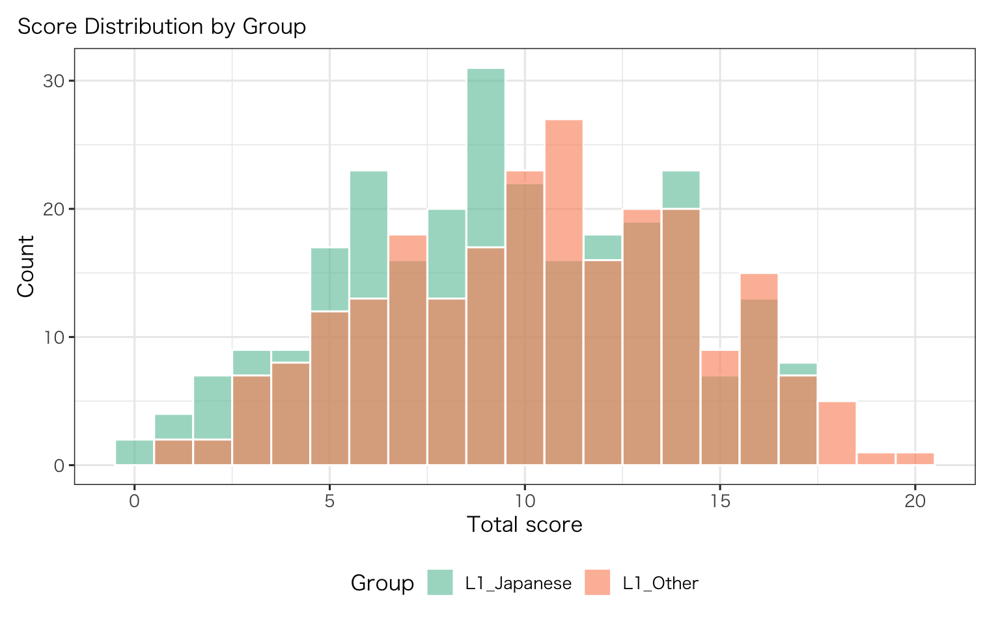
得点分布はおおむね正規に近い形を示しており、2群間でわずかに平均が異なります。この群差は DIF 分析のセクションで活用します。分布の両端（0点付近・満点付近）に受験者が少ないことは、Rasch 推定における能力推定の精度に影響しうる点です。
得点分布を確認したところで、いよいよ Rasch モデルを推定します。eRm::RM() を用いて、条件付き最大尤度法（CML）で項目困難度を推定します(Mair & Hatzinger, 2007)。
| 推定法 | 原理 | 主なRパッケージ | 特徴 |
|---|---|---|---|
| CML | 素点で条件付けて () を消去 | eRm |
Rasch の十分統計量性を直接利用。理論的に一貫(Andersen, 1973) |
| MML | () に分布仮定を置き積分 | mirt, TAM |
2PL/3PL に柔軟。標本が大きいほど安定(Bock & Aitkin, 1981) |
| JML | () と (b) を同時最適化 | TAM::tam.jml() |
直感的だが incidental parameter problem あり(Neyman & Scott, 1948) |
本章では CML（eRm::RM()）を主に使います。MML ベースの mirt はモデル比較（2PL/3PL）で利用します。論文では推定法を必ず明記してください(Ayala, 2009)。
rasch_fit <- eRm::RM(resp_df)
# Display Rasch model item parameters as gt table
coef(rasch_fit) |>
as.data.frame() |>
setNames("Estimate") |>
tibble::rownames_to_column("Item") |>
gt() |>
tab_header(title = "Rasch Model: Item Parameters") |>
fmt_number(columns = where(is.numeric), decimals = 3)| Rasch Model: Item Parameters | |
| Item | Estimate |
|---|---|
| beta Item01 | 2.163 |
| beta Item02 | 1.744 |
| beta Item03 | 1.475 |
| beta Item04 | 1.384 |
| beta Item05 | 0.664 |
| beta Item06 | 1.091 |
| beta Item07 | 0.845 |
| beta Item08 | 0.706 |
| beta Item09 | 0.330 |
| beta Item10 | 0.027 |
| beta Item11 | −0.032 |
| beta Item12 | −0.445 |
| beta Item13 | −0.356 |
| beta Item14 | −0.691 |
| beta Item15 | −0.961 |
| beta Item16 | −1.075 |
| beta Item17 | −1.679 |
| beta Item18 | −1.551 |
| beta Item19 | −1.679 |
| beta Item20 | −1.960 |
前節で Rasch 推定を実行しました。次に、推定された項目困難度の意味を確認し、Wright Map で受験者と項目の関係を可視化します。
item_beta <- coef(rasch_fit)
item_difficulty_tbl <- tibble(
item = str_remove(names(item_beta), "^beta\\s+"),
b_est = as.numeric(item_beta)
) |>
arrange(b_est)
item_difficulty_tbl |>
gt() |>
tab_header(
title = "Estimated Item Difficulty (Rasch)",
subtitle = "Higher b = More difficult"
) |>
fmt_number(columns = b_est, decimals = 3)| Estimated Item Difficulty (Rasch) | |
| Higher b = More difficult | |
| item | b_est |
|---|---|
| Item20 | −1.960 |
| Item19 | −1.679 |
| Item17 | −1.679 |
| Item18 | −1.551 |
| Item16 | −1.075 |
| Item15 | −0.961 |
| Item14 | −0.691 |
| Item12 | −0.445 |
| Item13 | −0.356 |
| Item11 | −0.032 |
| Item10 | 0.027 |
| Item09 | 0.330 |
| Item05 | 0.664 |
| Item08 | 0.706 |
| Item07 | 0.845 |
| Item06 | 1.091 |
| Item04 | 1.384 |
| Item03 | 1.475 |
| Item02 | 1.744 |
| Item01 | 2.163 |
ggplot(item_difficulty_tbl, aes(x = reorder(item, b_est), y = b_est)) +
geom_col(fill = "#4C78A8") +
coord_flip() +
labs(
title = "Item Difficulty Ordering",
x = "Item",
y = "Estimated difficulty (b)"
)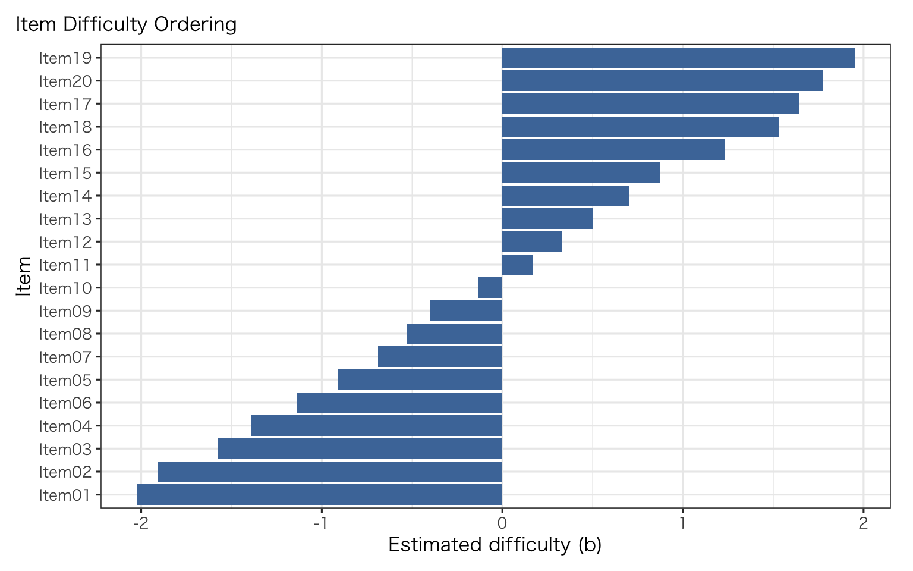
項目困難度の棒グラフから、Item01 が最も易しく（(b) が最小）、Item20 が最も難しいことが視覚的に確認できます。推定値は真値（seq(-2, 2, ...)）と良い対応を示しており、500名の標本で CML 推定が安定していることがわかります。
項目特性曲線（ICC）は、各項目について「能力 () が上がるにつれて正答確率がどう変化するか」を示します。Rasch モデルでは全項目の ICC は同じ傾き（識別力）を持ち、位置（困難度）だけが異なります。
plotICC(rasch_fit, item.subset = "all", empICC = list("raw"), legend = FALSE)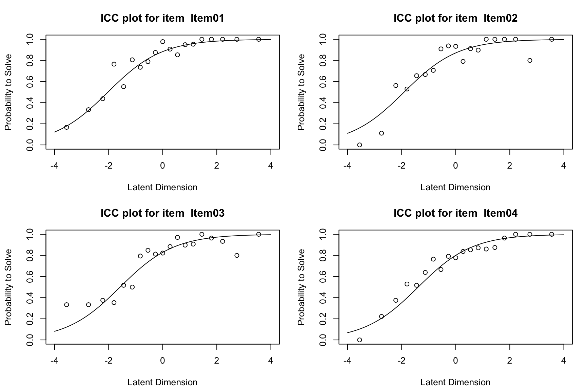
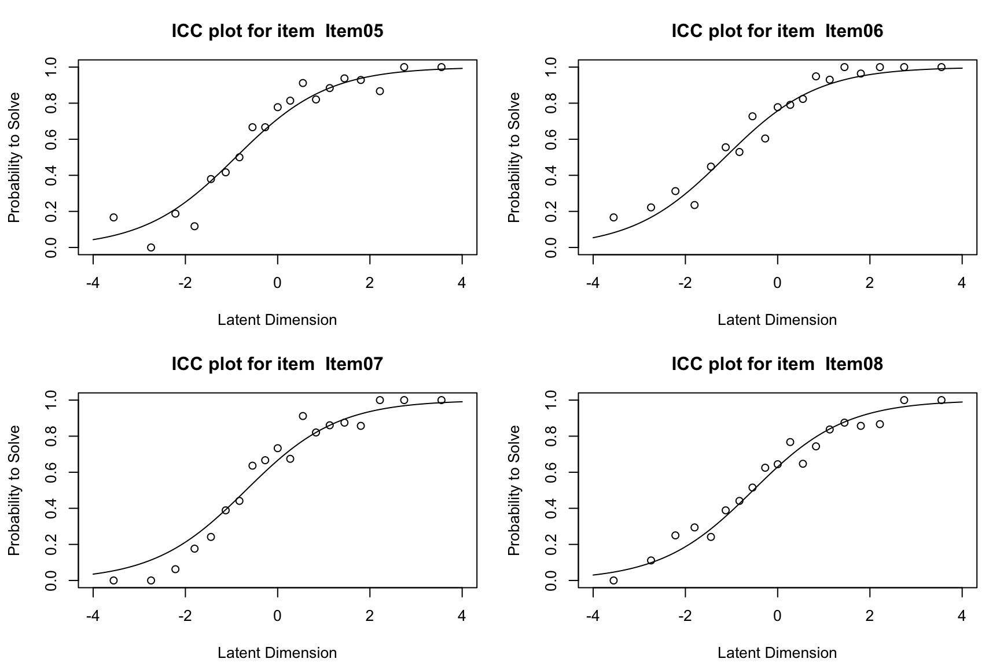
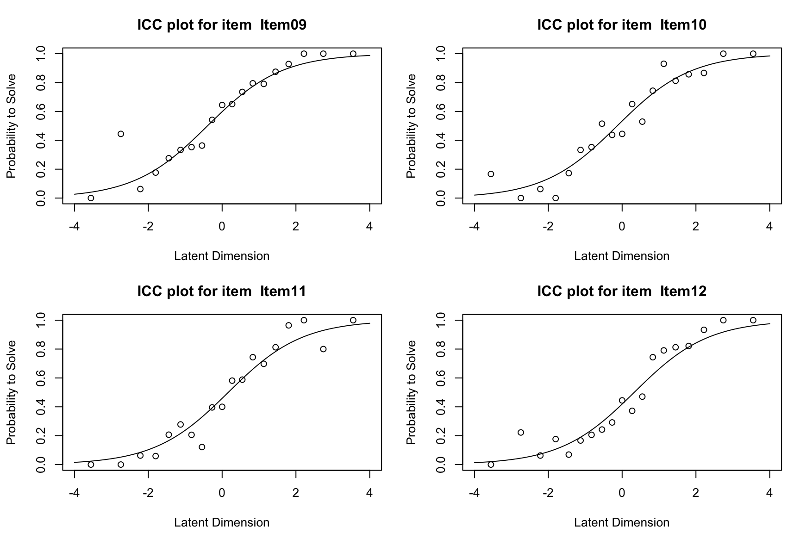
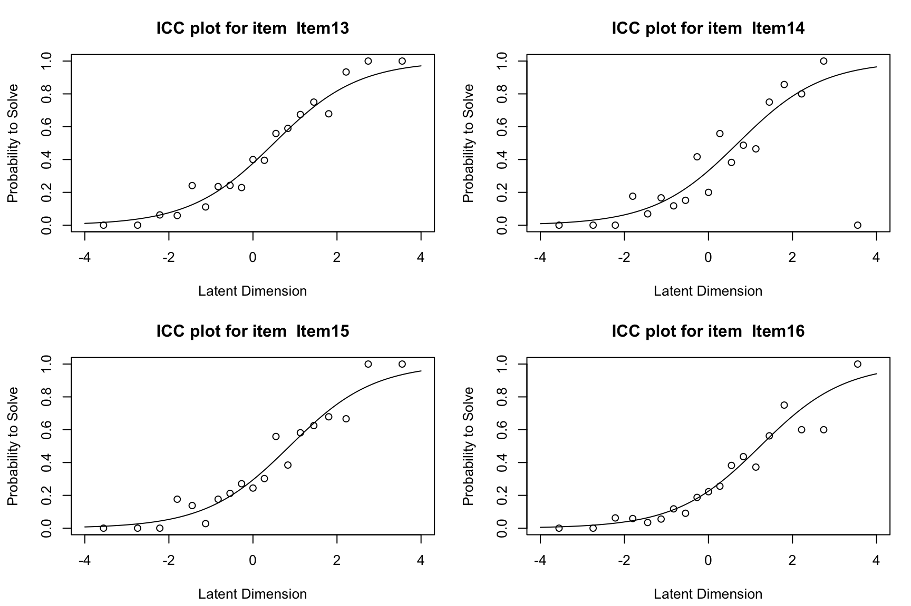
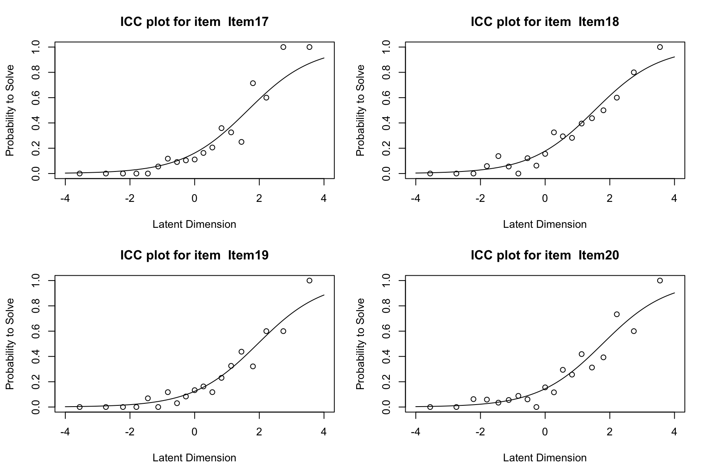
ICC の読み方: 各曲線の変曲点（正答確率 = 0.5 の位置）が、その項目の困難度 (b_j) に対応します。経験的 ICC（点）が理論曲線から大きくずれている項目があれば、モデル不適合の兆候です。
Wright Map は IRT の中核可視化です。受験者能力（()）と項目困難度（(b)）を同一ロジット尺度上に並べ、テストがどの能力帯をカバーしているかを一目で把握できます。
plotPImap(rasch_fit)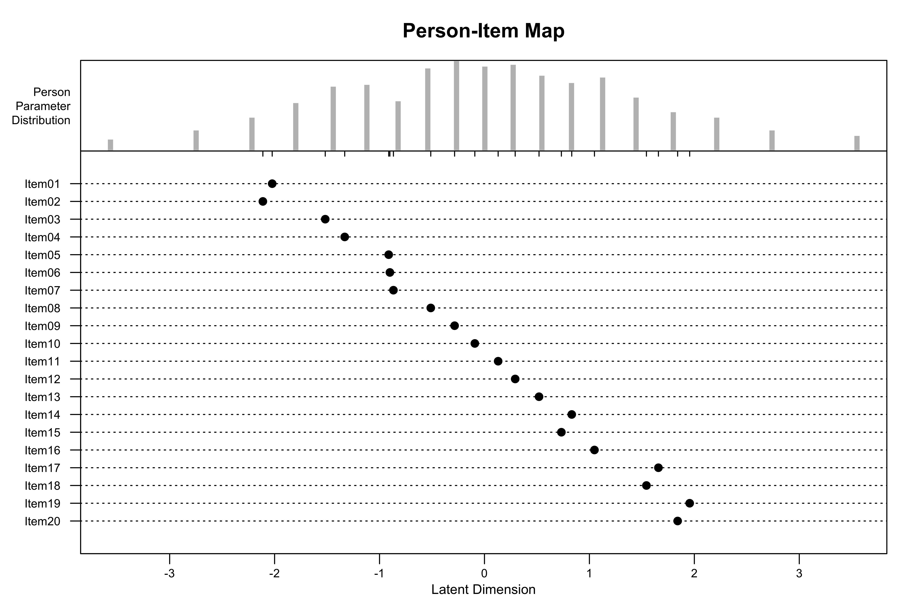
Wright Map で人-項目関係の全体像を把握したところで、次は個々の項目がモデルの期待通りに機能しているかを検証します。
Rasch では、Infit/Outfit を使って「モデル期待からの逸脱」を検討します(Boone et al., 2017; Mair & Hatzinger, 2007)。
pp <- person.parameter(rasch_fit)
fit_obj <- eRm::itemfit(pp)
fit_tbl <- tibble(
item = names(fit_obj$i.infitMSQ),
infit_msq = as.numeric(fit_obj$i.infitMSQ),
outfit_msq = as.numeric(fit_obj$i.outfitMSQ),
infit_z = as.numeric(fit_obj$i.infitZ),
outfit_z = as.numeric(fit_obj$i.outfitZ)
) |>
arrange(desc(outfit_msq))
fit_tbl |>
gt() |>
tab_header(
title = "Item Fit Statistics",
subtitle = "Infit/Outfit for Rasch Model"
) |>
fmt_number(columns = c(infit_msq, outfit_msq, infit_z, outfit_z), decimals = 3)| Item Fit Statistics | ||||
| Infit/Outfit for Rasch Model | ||||
| item | infit_msq | outfit_msq | infit_z | outfit_z |
|---|---|---|---|---|
| Item10 | 1.061 | 1.133 | 1.532 | 1.962 |
| Item03 | 1.050 | 1.088 | 0.819 | 0.747 |
| Item19 | 0.979 | 1.041 | −0.290 | 0.335 |
| Item12 | 0.981 | 1.018 | −0.454 | 0.272 |
| Item20 | 1.005 | 1.014 | 0.095 | 0.142 |
| Item07 | 1.004 | 0.990 | 0.096 | −0.090 |
| Item06 | 1.038 | 0.983 | 0.750 | −0.145 |
| Item02 | 0.981 | 0.973 | −0.254 | −0.146 |
| Item11 | 1.001 | 0.948 | 0.029 | −0.786 |
| Item04 | 0.942 | 0.941 | −0.977 | −0.490 |
| Item09 | 0.980 | 0.932 | −0.480 | −1.001 |
| Item16 | 0.955 | 0.930 | −0.876 | −0.681 |
| Item18 | 0.980 | 0.919 | −0.297 | −0.584 |
| Item14 | 0.969 | 0.908 | −0.695 | −1.137 |
| Item17 | 0.924 | 0.907 | −1.141 | −0.634 |
| Item05 | 0.964 | 0.904 | −0.807 | −1.257 |
| Item13 | 0.927 | 0.893 | −1.808 | −1.539 |
| Item08 | 0.952 | 0.885 | −1.082 | −1.488 |
| Item15 | 0.933 | 0.860 | −1.375 | −1.530 |
| Item01 | 0.866 | 0.684 | −1.618 | −1.957 |
Infit MSQ と Outfit MSQ がおおむね 0.7〜1.3 の範囲に収まっていれば、Rasch モデルの期待に概ね沿った反応パターンと解釈できます。Outfit が大きい項目（例: 1.5 を超える場合）は、能力と不釣り合いな正解・不正解パターン（外れ値的反応）の影響を受けている可能性があります。
不適合統計量が何を捉えているかを直感的に理解するため、意図的に「おかしな項目」を1つ作成し、Infit/Outfit がどう反応するかを確認します。
# 正常データのコピーを作成し、1項目だけランダムに回答を入れ替える
resp_misfit <- resp_df
set.seed(2024)
# Item10 について、能力の高い受験者の正答を不正答に、低い受験者の不正答を正答に入れ替え
high_ability <- which(rowSums(resp_df) >= quantile(rowSums(resp_df), 0.75))
low_ability <- which(rowSums(resp_df) <= quantile(rowSums(resp_df), 0.25))
resp_misfit[high_ability, "Item10"] <- 1 - resp_misfit[high_ability, "Item10"]
resp_misfit[low_ability, "Item10"] <- 1 - resp_misfit[low_ability, "Item10"]
# Rasch推定 → 適合度
rasch_misfit <- eRm::RM(resp_misfit)
pp_misfit <- person.parameter(rasch_misfit)
fit_misfit <- eRm::itemfit(pp_misfit)
# 比較表
misfit_compare <- tibble(
item = names(fit_misfit$i.infitMSQ),
infit_msq = as.numeric(fit_misfit$i.infitMSQ),
outfit_msq = as.numeric(fit_misfit$i.outfitMSQ)
) |>
mutate(manipulated = ifelse(item == "Item10", "manipulated", "normal")) |>
arrange(desc(outfit_msq))
misfit_compare |>
gt() |>
tab_header(
title = "Misfit Demo: Item10 Deliberately Corrupted",
subtitle = "High-ability correct → incorrect, low-ability incorrect → correct"
) |>
fmt_number(columns = c(infit_msq, outfit_msq), decimals = 3) |>
tab_style(
style = cell_fill(color = "#FFE0E0"),
locations = cells_body(rows = manipulated == "manipulated")
)| Misfit Demo: Item10 Deliberately Corrupted | |||
| High-ability correct → incorrect, low-ability incorrect → correct | |||
| item | infit_msq | outfit_msq | manipulated |
|---|---|---|---|
| Item10 | 1.720 | 2.059 | manipulated |
| Item03 | 1.009 | 1.046 | normal |
| Item20 | 0.976 | 0.969 | normal |
| Item12 | 0.933 | 0.924 | normal |
| Item11 | 0.957 | 0.917 | normal |
| Item06 | 0.984 | 0.913 | normal |
| Item07 | 0.955 | 0.912 | normal |
| Item19 | 0.929 | 0.909 | normal |
| Item05 | 0.941 | 0.901 | normal |
| Item14 | 0.933 | 0.882 | normal |
| Item18 | 0.939 | 0.882 | normal |
| Item09 | 0.934 | 0.881 | normal |
| Item16 | 0.931 | 0.880 | normal |
| Item04 | 0.910 | 0.864 | normal |
| Item13 | 0.902 | 0.864 | normal |
| Item17 | 0.900 | 0.863 | normal |
| Item08 | 0.909 | 0.857 | normal |
| Item15 | 0.903 | 0.857 | normal |
| Item02 | 0.920 | 0.855 | normal |
| Item01 | 0.840 | 0.668 | normal |
操作した Item10 は、高能力者が不正解・低能力者が正解するパターンを人為的に作ったため、Rasch モデルの「能力が高いほど正答確率が高い」という期待に反します。結果として Infit/Outfit が他の項目と比べて明確に大きくなります。実データでこのような値を示す項目は、項目の質（曖昧な選択肢、文化的バイアスなど）を再検討する必要があります。
Pathway Map は、縦軸に困難度、横軸に適合統計量を配置することで、「どの困難度帯の項目が不適合を示しているか」を一目で把握できる可視化です(Bond & Fox, 2007; Mair & Hatzinger, 2007)。
if (!exists("pp")) {
pp <- person.parameter(rasch_fit)
}
plotPWmap(
rasch_fit,
pmap = TRUE,
imap = TRUE,
pp = pp,
mainboth = "Pathway Map (Item/Person Fit vs Difficulty)",
tlab = "Infit t statistic"
)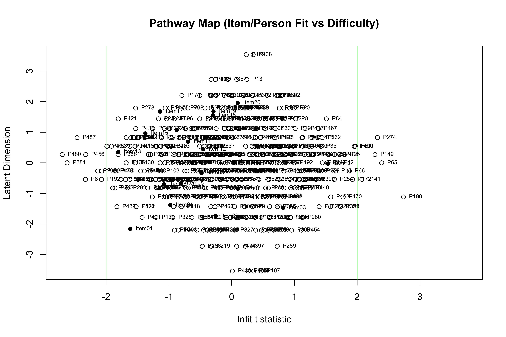
Pathway Map 上で横軸の中心（Infit t ≈ 0）から大きく離れた点は、モデル適合に問題がある項目です。縦軸の位置と合わせて「難しい項目に不適合が集中しているか」「特定の困難度帯に問題があるか」を読み取ります。
Pathway Map の横軸は文献により Infit t / Outfit MNSQ が混在します。 本章では狭義の定義に合わせ、Infit t statistic を採用しています。
適合度分析で個々の項目の振る舞いを確認しました。ここでは、Rasch モデルが依拠する2つの統計的前提、すなわち一次元性と局所独立性を検証します。これらの前提が崩れると、推定値の解釈やDIF分析の妥当性に影響が及びます。
一次元性は「主要な潜在特性が1つであるか」を問う前提です。2値データに対しては、ピアソン相関よりも tetrachoric 相関に基づく固有値分析が適切です(Cai et al., 2016)。
tetra_mat <- psych::tetrachoric(resp_df)$rhoeig <- eigen(tetra_mat)$values
eig_tbl <- tibble(
factor = seq_along(eig),
eigenvalue = eig
)
ggplot(eig_tbl, aes(x = factor, y = eigenvalue)) +
geom_line(color = "#2C7FB8", linewidth = 0.8) +
geom_point(color = "#2C7FB8", size = 2) +
geom_hline(yintercept = 1, linetype = 2, color = "#B22222") +
scale_x_continuous(breaks = 1:length(eig)) +
labs(
title = "Scree Plot (Tetrachoric Eigenvalues)",
x = "Factor",
y = "Eigenvalue"
)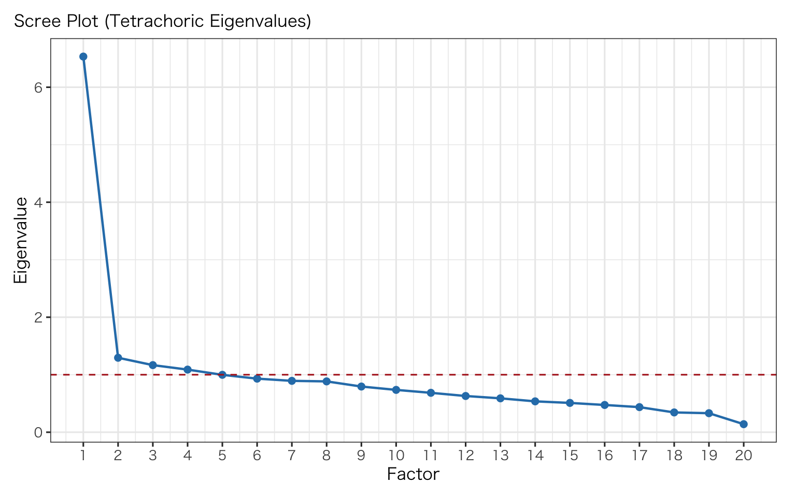
uni_index <- tibble(
first_eigen = eig[1],
second_eigen = eig[2],
ratio_1st_2nd = eig[1] / eig[2]
)
uni_index |>
gt() |>
tab_header(
title = "Unidimensionality Heuristic",
subtitle = "First/Second Eigenvalue Ratio"
) |>
fmt_number(columns = everything(), decimals = 3)| Unidimensionality Heuristic | ||
| First/Second Eigenvalue Ratio | ||
| first_eigen | second_eigen | ratio_1st_2nd |
|---|---|---|
| 6.048 | 1.307 | 4.628 |
第1固有値と第2固有値の比が大きい（例: 3以上）場合、主要因子が1つであると判断できます。スクリープロットで第1固有値の後に明確な「肘」があり、第2固有値以降が基準線（固有値 = 1）付近に落ちていれば、一次元性の根拠になります。
一次元性を確認したら、次に局所独立性を検証します。局所独立性は「能力 () を固定すれば、項目残差同士は独立である」という前提です。違反の兆候は、特定の項目ペアの残差相関が高い場合に現れます。ここでは Yen の Q3 を用います(Christensen et al., 2017; Yen, 1984)。
rasch_mirt <- mirt(resp_df, 1, itemtype = "Rasch", verbose = FALSE)
q3_mat <- residuals(rasch_mirt, type = "Q3", verbose = FALSE)
diag(q3_mat) <- NA_real_
q3_pairs <- as.data.frame(as.table(q3_mat)) |>
rename(item1 = Var1, item2 = Var2, q3 = Freq) |>
filter(as.character(item1) < as.character(item2)) |>
arrange(desc(q3))
q3_pairs |>
slice_head(n = 10) |>
gt() |>
tab_header(
title = "Top Residual Correlations (Yen's Q3)",
subtitle = "Largest item-pair dependencies"
) |>
fmt_number(columns = q3, decimals = 3)| Top Residual Correlations (Yen's Q3) | ||
| Largest item-pair dependencies | ||
| item1 | item2 | q3 |
|---|---|---|
| Item01 | Item07 | 0.086 |
| Item03 | Item10 | 0.076 |
| Item01 | Item02 | 0.062 |
| Item12 | Item15 | 0.061 |
| Item18 | Item19 | 0.058 |
| Item05 | Item11 | 0.058 |
| Item10 | Item13 | 0.055 |
| Item08 | Item19 | 0.047 |
| Item02 | Item04 | 0.027 |
| Item11 | Item18 | 0.027 |
Q3 の絶対値が 0.20 を大きく超える項目ペアがある場合、局所依存（LD）の兆候です。LD が見られる場合は、テストレット構造（同一パッセージに基づく複数項目など）の存在を確認し、必要に応じてテストレットモデルや bi-factor モデルの適用を検討します。
Q3 の閾値は固定値ではなく、項目数・標本サイズ・カテゴリ数に依存します。可能ならブートストラップ等で臨界値を設定してください(Christensen et al., 2017)。
前節までの分析は、すべて Rasch（1PL）モデルに基づいていました。ここでは、識別力パラメータ (a_j) を項目ごとに自由推定する 2PL、さらに当て推量パラメータ (c_j) を加える 3PL への拡張を確認します。
Rasch（1PL）から 2PL, 3PL への拡張は次式で表せます(Ayala, 2009; Birnbaum, 1968)。
\[ \text{1PL: }P(X_{ij}=1\mid\theta_i)=\operatorname{logit}^{-1}(\theta_i-b_j) \]
\[ \text{2PL: }P(X_{ij}=1\mid\theta_i)=\operatorname{logit}^{-1}\left(a_j(\theta_i-b_j)\right) \]
\[ \text{3PL: }P(X_{ij}=1\mid\theta_i)=c_j+(1-c_j)\operatorname{logit}^{-1}\left(a_j(\theta_i-b_j)\right) \]
ここで - (a_j): 識別力（ICCの傾き） - (b_j): 困難度（正答確率の位置） - (c_j): 下方漸近線（guessing）
です。
3PL は多肢選択式テストでは有用ですが、標本が小さい場合や極端反応が多い場合に (c_j) が不安定になりやすいため、推定拘束や事前分布の工夫が必要です(Ayala, 2009; Baker & Kim, 2004)。
m1_rasch <- mirt(resp_df, 1, itemtype = "Rasch", verbose = FALSE)
m2_2pl <- mirt(resp_df, 1, itemtype = "2PL", verbose = FALSE)
m3_3pl <- mirt(resp_df, 1, itemtype = "3PL", verbose = FALSE)
cmp <- anova(m1_rasch, m2_2pl, m3_3pl)
cmp AIC SABIC HQ BIC logLik X2 df p
m1_rasch 10970.23 10992.08 11004.96 11058.73 -5464.114
m2_2pl 10987.57 11029.19 11053.72 11156.16 -5453.786 20.655 19 0.356
m3_3pl 11020.57 11083.00 11119.80 11273.45 -5450.286 7 20 0.997cmp_tbl <- as_tibble(cmp, rownames = "model")
cmp_tbl |>
gt() |>
tab_header(
title = "Model Comparison: 1PL vs 2PL vs 3PL",
subtitle = "Likelihood-based comparison (interpret with caution for boundary parameters)"
) |>
fmt_number(columns = where(is.numeric), decimals = 3)| Model Comparison: 1PL vs 2PL vs 3PL | ||||||||
| Likelihood-based comparison (interpret with caution for boundary parameters) | ||||||||
| model | AIC | SABIC | HQ | BIC | logLik | X2 | df | p |
|---|---|---|---|---|---|---|---|---|
| m1_rasch | 10,970.227 | 10,992.079 | 11,004.957 | 11,058.734 | −5,464.114 | NA | NA | NA |
| m2_2pl | 10,987.572 | 11,029.194 | 11,053.724 | 11,156.157 | −5,453.786 | 20.655 | 19.000 | 0.356 |
| m3_3pl | 11,020.572 | 11,083.005 | 11,119.800 | 11,273.448 | −5,450.286 | 7.000 | 20.000 | 0.997 |
モデル比較表で AIC/BIC が小さいモデルがデータへの当てはまりが良いことを意味しますが、パラメータ数の増加（2PL: +19、3PL: +38）に対するゲインが実質的かどうかを判断することが重要です。シミュレーションデータは Rasch で生成しているため、1PL が最適になることが期待されます。
par_2pl <- coef(m2_2pl, IRTpars = TRUE, simplify = TRUE)$items
par_3pl <- coef(m3_3pl, IRTpars = TRUE, simplify = TRUE)$items
disc_tbl <- as_tibble(par_2pl, rownames = "item") |>
dplyr::select(item, a, b) |>
dplyr::arrange(desc(a))
guess_tbl <- as_tibble(par_3pl, rownames = "item") |>
dplyr::select(item, a, b, g) |>
dplyr::arrange(desc(g))
disc_tbl |>
gt() |>
tab_header(
title = "2PL Item Parameters",
subtitle = "Discrimination (a) and Difficulty (b)"
) |>
fmt_number(columns = c(a, b), decimals = 3)| 2PL Item Parameters | ||
| Discrimination (a) and Difficulty (b) | ||
| item | a | b |
|---|---|---|
| Item01 | 1.457 | −1.678 |
| Item13 | 1.247 | 0.314 |
| Item15 | 1.193 | 0.857 |
| Item08 | 1.154 | −0.629 |
| Item17 | 1.139 | 1.536 |
| Item16 | 1.115 | 1.000 |
| Item14 | 1.098 | 0.653 |
| Item05 | 1.091 | −0.613 |
| Item04 | 1.087 | −1.289 |
| Item09 | 1.058 | −0.307 |
| Item12 | 1.016 | 0.447 |
| Item11 | 0.992 | 0.041 |
| Item07 | 0.956 | −0.857 |
| Item18 | 0.939 | 1.624 |
| Item02 | 0.935 | −1.810 |
| Item19 | 0.929 | 1.771 |
| Item06 | 0.861 | −1.200 |
| Item20 | 0.820 | 2.278 |
| Item10 | 0.776 | −0.022 |
| Item03 | 0.747 | −1.820 |
guess_tbl |>
slice_head(n = 10) |>
gt() |>
tab_header(
title = "Top Guessing Parameters in 3PL",
subtitle = "Large g may indicate overfitting or unstable estimation"
) |>
fmt_number(columns = c(a, b, g), decimals = 3)| Top Guessing Parameters in 3PL | |||
| Large g may indicate overfitting or unstable estimation | |||
| item | a | b | g |
|---|---|---|---|
| Item06 | 1.780 | 0.145 | 0.462 |
| Item03 | 1.065 | −0.520 | 0.413 |
| Item01 | 1.615 | −1.424 | 0.152 |
| Item12 | 1.358 | 0.661 | 0.103 |
| Item17 | 1.365 | 1.511 | 0.028 |
| Item02 | 0.937 | −1.765 | 0.027 |
| Item04 | 1.090 | −1.278 | 0.003 |
| Item09 | 1.059 | −0.301 | 0.001 |
| Item20 | 0.814 | 2.297 | 0.001 |
| Item15 | 1.208 | 0.854 | 0.001 |
2PL の識別力 (a) が項目間で大きく異なる場合は、Rasch の等識別力仮定が不適切である可能性を示唆します。3PL の当て推量パラメータ (g) が 0.25 を超える項目は、推定が不安定か、選択肢の質に問題がある可能性があります。
theta_grid <- matrix(seq(-3, 3, length.out = 121))
info_1pl <- testinfo(m1_rasch, Theta = theta_grid)
info_2pl <- testinfo(m2_2pl, Theta = theta_grid)
info_3pl <- testinfo(m3_3pl, Theta = theta_grid)
info_df <- tibble(
theta = as.numeric(theta_grid),
`1PL (Rasch)` = as.numeric(info_1pl),
`2PL` = as.numeric(info_2pl),
`3PL` = as.numeric(info_3pl)
) |>
pivot_longer(-theta, names_to = "model", values_to = "information")
ggplot(info_df, aes(x = theta, y = information, color = model)) +
geom_line(linewidth = 1) +
scale_color_brewer(palette = "Dark2") +
labs(
title = "Test Information Curves",
x = expression(theta),
y = "Information",
color = "Model"
)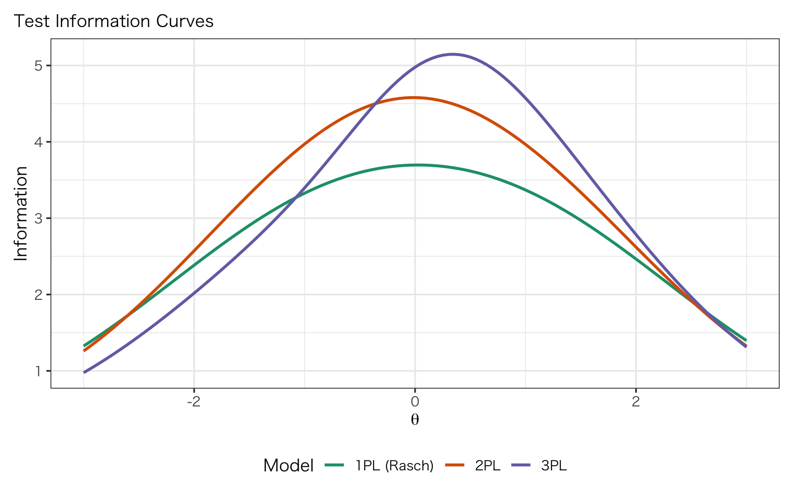
テスト情報曲線は、テストが各能力水準でどの程度精密に測定できているかを示します。情報量が高い帯域ほど測定精度が高く、標準誤差が小さくなります。Rasch（1PL）は中央付近で最大情報量を示す対称形になる傾向がありますが、2PL/3PL では識別力の違いにより情報量の分布が変わります。
前節で1PL/2PL/3PLのモデル比較を行いました。ここでは、R の IRT パッケージエコシステムを整理し、同一データに対する推定結果がパッケージ間でどの程度一致するかを確認します(Chalmers, 2012; Robitzsch et al., 2025; Robitzsch, 2025)。
package_tbl <- tibble(
package = c("mirt", "TAM", "sirt"),
official_core_functions = c(
"mirt(), M2(), DIF()",
"tam.mml(), tam.fit(), tam.wle(), tam.jml()",
"rasch.mml2(), rasch.jml(), modelfit.sirt()"
),
main_estimation = c(
"MML (EM/MHRM)",
"MML and JML",
"MML and JML"
),
strength = c(
"2PL/3PL・多次元・DIFの実装が強い",
"Rasch系運用（尺度化・人物推定・実務）に強い",
"補助的IRT手法・検定・拡張モデルが豊富"
)
)
package_tbl |>
gt() |>
tab_header(
title = "IRT Package Ecosystem in R",
subtitle = "Officially documented core workflows"
)| IRT Package Ecosystem in R | |||
| Officially documented core workflows | |||
| package | official_core_functions | main_estimation | strength |
|---|---|---|---|
| mirt | mirt(), M2(), DIF() | MML (EM/MHRM) | 2PL/3PL・多次元・DIFの実装が強い |
| TAM | tam.mml(), tam.fit(), tam.wle(), tam.jml() | MML and JML | Rasch系運用（尺度化・人物推定・実務）に強い |
| sirt | rasch.mml2(), rasch.jml(), modelfit.sirt() | MML and JML | 補助的IRT手法・検定・拡張モデルが豊富 |
3パッケージはそれぞれ得意分野が異なります。mirt は柔軟なモデル指定（多次元・混合）に強く、TAM は Rasch 系の運用（WLE・適合度・DIF）に特化しており、sirt は補助的な手法（残差適合・特殊モデル）を提供します。以下の折りたたみセクションで各パッケージのワークフローを確認できます。
TAM は Rasch 系運用に強く、tam.mml() → tam.fit() → tam.wle() の順でワークフローが完結します。
tam_mml <- TAM::tam.mml(resp_df, irtmodel = "1PL", verbose = FALSE)
tam_jml <- suppressWarnings({
capture.output(tmp <- TAM::tam.jml(resp_df, verbose = FALSE))
tmp
})
tam_fit <- suppressWarnings({
capture.output(tmp <- TAM::tam.fit(tam_mml))
tmp
})
tam_wle <- suppressWarnings({
capture.output(tmp <- TAM::tam.wle(tam_mml))
tmp
})
tam_b_tbl <- tam_mml$xsi |>
as_tibble(rownames = "item") |>
transmute(item, b_tam_mml = xsi) |>
left_join(
tibble(item = colnames(resp_df), b_tam_jml = as.numeric(tam_jml$xsi)),
by = "item"
)
tam_b_tbl |>
gt() |>
tab_header(
title = "TAM Item Difficulty Estimates",
subtitle = "Comparison of MML and JML estimates"
) |>
fmt_number(columns = c(b_tam_mml, b_tam_jml), decimals = 3)| TAM Item Difficulty Estimates | ||
| Comparison of MML and JML estimates | ||
| item | b_tam_mml | b_tam_jml |
|---|---|---|
| Item01 | −2.151 | −2.170 |
| Item02 | −1.733 | −1.747 |
| Item03 | −1.465 | −1.475 |
| Item04 | −1.373 | −1.383 |
| Item05 | −0.655 | −0.657 |
| Item06 | −1.081 | −1.087 |
| Item07 | −0.835 | −0.839 |
| Item08 | −0.697 | −0.699 |
| Item09 | −0.322 | −0.321 |
| Item10 | −0.018 | −0.014 |
| Item11 | 0.040 | 0.045 |
| Item12 | 0.454 | 0.462 |
| Item13 | 0.364 | 0.371 |
| Item14 | 0.699 | 0.710 |
| Item15 | 0.969 | 0.982 |
| Item16 | 1.083 | 1.096 |
| Item17 | 1.689 | 1.706 |
| Item18 | 1.560 | 1.577 |
| Item19 | 1.689 | 1.706 |
| Item20 | 1.972 | 1.990 |
tam_itemfit_tbl <- as_tibble(tam_fit$itemfit) |>
transmute(
item = parameter,
outfit_msq = Outfit,
infit_msq = Infit,
outfit_p = Outfit_p,
infit_p = Infit_p
)
tam_wle_summary <- tibble(
mean_theta = mean(tam_wle$theta, na.rm = TRUE),
sd_theta = sd(tam_wle$theta, na.rm = TRUE),
wle_rel = unique(tam_wle$WLE.rel)
)
tam_itemfit_tbl |>
gt() |>
tab_header(
title = "TAM Item Fit",
subtitle = "Outfit/Infit based on tam.fit()"
) |>
fmt_number(columns = c(outfit_msq, infit_msq, outfit_p, infit_p), decimals = 3)| TAM Item Fit | ||||
| Outfit/Infit based on tam.fit() | ||||
| item | outfit_msq | infit_msq | outfit_p | infit_p |
|---|---|---|---|---|
| Item01 | 0.800 | 0.947 | 0.016 | 0.560 |
| Item02 | 1.044 | 1.021 | 0.540 | 0.755 |
| Item03 | 1.094 | 1.061 | 0.131 | 0.316 |
| Item04 | 1.010 | 0.987 | 0.858 | 0.837 |
| Item05 | 0.979 | 0.995 | 0.604 | 0.902 |
| Item06 | 1.023 | 1.044 | 0.652 | 0.378 |
| Item07 | 1.018 | 1.012 | 0.683 | 0.788 |
| Item08 | 0.950 | 0.977 | 0.228 | 0.594 |
| Item09 | 0.979 | 0.993 | 0.577 | 0.855 |
| Item10 | 1.087 | 1.053 | 0.019 | 0.148 |
| Item11 | 0.991 | 1.004 | 0.794 | 0.904 |
| Item12 | 1.026 | 1.002 | 0.504 | 0.958 |
| Item13 | 0.939 | 0.956 | 0.097 | 0.233 |
| Item14 | 0.966 | 0.989 | 0.419 | 0.808 |
| Item15 | 0.940 | 0.972 | 0.191 | 0.548 |
| Item16 | 0.964 | 0.982 | 0.467 | 0.726 |
| Item17 | 0.954 | 0.974 | 0.501 | 0.713 |
| Item18 | 0.988 | 1.012 | 0.858 | 0.833 |
| Item19 | 1.045 | 1.009 | 0.511 | 0.880 |
| Item20 | 1.066 | 1.038 | 0.411 | 0.622 |
tam_wle_summary |>
gt() |>
tab_header(
title = "TAM WLE Summary",
subtitle = "Distribution and reliability of person estimates"
) |>
fmt_number(columns = everything(), decimals = 3)| TAM WLE Summary | ||
| Distribution and reliability of person estimates | ||
| mean_theta | sd_theta | wle_rel |
|---|---|---|
| −0.002 | 1.146 | 0.759 |
TAM の WLE（Warm 推定量）信頼性は、Rasch 文脈での人物推定の信頼性係数です。0.80 を超えていれば実用上十分とされます。
sirt は補助的な IRT 手法やグローバル適合検定に強みがあります。rasch.mml2() → modelfit.sirt() で残差適合診断まで一貫して実行できます。
sirt_mml <- sirt::rasch.mml2(resp_df, progress = FALSE)
sirt_jml <- sirt::rasch.jml(resp_df, progress = FALSE, calc.fit = FALSE)
sirt_fit <- sirt::modelfit.sirt(sirt_mml)
sirt_b_tbl <- as_tibble(sirt_mml$item) |>
transmute(item, b_sirt_mml = b) |>
left_join(
as_tibble(sirt_jml$item, rownames = "item") |>
transmute(item, b_sirt_jml = itemdiff.correction),
by = "item"
)
sirt_b_tbl |>
gt() |>
tab_header(
title = "sirt Item Difficulty Estimates",
subtitle = "Comparison of rasch.mml2 and rasch.jml"
) |>
fmt_number(columns = c(b_sirt_mml, b_sirt_jml), decimals = 3)| sirt Item Difficulty Estimates | ||
| Comparison of rasch.mml2 and rasch.jml | ||
| item | b_sirt_mml | b_sirt_jml |
|---|---|---|
| Item01 | −2.151 | −2.170 |
| Item02 | −1.733 | −1.747 |
| Item03 | −1.465 | −1.475 |
| Item04 | −1.373 | −1.383 |
| Item05 | −0.655 | −0.657 |
| Item06 | −1.081 | −1.087 |
| Item07 | −0.835 | −0.839 |
| Item08 | −0.697 | −0.699 |
| Item09 | −0.322 | −0.321 |
| Item10 | −0.018 | −0.014 |
| Item11 | 0.040 | 0.045 |
| Item12 | 0.454 | 0.462 |
| Item13 | 0.364 | 0.371 |
| Item14 | 0.699 | 0.710 |
| Item15 | 0.969 | 0.982 |
| Item16 | 1.083 | 1.096 |
| Item17 | 1.689 | 1.706 |
| Item18 | 1.560 | 1.577 |
| Item19 | 1.689 | 1.706 |
| Item20 | 1.972 | 1.990 |
sirt_fit_tbl <- as_tibble(sirt_fit$modelfit.test)
sirt_stat_tbl <- as_tibble(sirt_fit$statlist)
sirt_fit_tbl |>
gt() |>
tab_header(
title = "sirt Model Fit Tests",
subtitle = "Global fit diagnostics from modelfit.sirt()"
) |>
fmt_number(columns = c(value, p), decimals = 3)| sirt Model Fit Tests | ||
| Global fit diagnostics from modelfit.sirt() | ||
| type | value | p |
|---|---|---|
| max(X2) | 7.587 | 1.000 |
| abs(fcor) | 0.135 | 0.256 |
sirt_stat_tbl |>
gt() |>
tab_header(
title = "sirt Residual Fit Summary",
subtitle = "MAD/SRMSR-type residual diagnostics"
) |>
fmt_number(columns = everything(), decimals = 3)| sirt Residual Fit Summary | ||||||
| MAD/SRMSR-type residual diagnostics | ||||||
| maxX2 | p_maxX2 | MADcor | SRMSR | 100*MADRESIDCOV | MADQ3 | MADaQ3 |
|---|---|---|---|---|---|---|
| 7.587 | 1.000 | 0.033 | 0.042 | 0.669 | 0.048 | 0.035 |
SRMSR（Standardized Root Mean Square Residual）が 0.05 未満であれば、モデルの残差適合が良好と判断できます。
mirt_rasch_b <- coef(m1_rasch, IRTpars = TRUE, simplify = TRUE)$items[, "b"]
cross_pkg_tbl <- item_difficulty_tbl |>
rename(b_erm = b_est) |>
left_join(tam_b_tbl |> dplyr::select(item, b_tam_mml), by = "item") |>
left_join(sirt_b_tbl |> dplyr::select(item, b_sirt_mml), by = "item") |>
mutate(b_mirt_rasch = mirt_rasch_b[item])
cross_pkg_tbl |>
gt() |>
tab_header(
title = "Cross-Package Rasch Difficulty Comparison",
subtitle = "eRm vs TAM vs sirt vs mirt (Rasch specification)"
) |>
fmt_number(columns = c(b_erm, b_tam_mml, b_sirt_mml, b_mirt_rasch), decimals = 3)| Cross-Package Rasch Difficulty Comparison | ||||
| eRm vs TAM vs sirt vs mirt (Rasch specification) | ||||
| item | b_erm | b_tam_mml | b_sirt_mml | b_mirt_rasch |
|---|---|---|---|---|
| Item20 | −1.960 | 1.972 | 1.972 | 1.972 |
| Item19 | −1.679 | 1.689 | 1.689 | 1.689 |
| Item17 | −1.679 | 1.689 | 1.689 | 1.689 |
| Item18 | −1.551 | 1.560 | 1.560 | 1.561 |
| Item16 | −1.075 | 1.083 | 1.083 | 1.083 |
| Item15 | −0.961 | 0.969 | 0.969 | 0.969 |
| Item14 | −0.691 | 0.699 | 0.699 | 0.699 |
| Item12 | −0.445 | 0.454 | 0.454 | 0.454 |
| Item13 | −0.356 | 0.364 | 0.364 | 0.364 |
| Item11 | −0.032 | 0.040 | 0.040 | 0.040 |
| Item10 | 0.027 | −0.018 | −0.018 | −0.018 |
| Item09 | 0.330 | −0.322 | −0.322 | −0.322 |
| Item05 | 0.664 | −0.655 | −0.655 | −0.655 |
| Item08 | 0.706 | −0.697 | −0.697 | −0.697 |
| Item07 | 0.845 | −0.835 | −0.835 | −0.835 |
| Item06 | 1.091 | −1.081 | −1.081 | −1.081 |
| Item04 | 1.384 | −1.373 | −1.373 | −1.373 |
| Item03 | 1.475 | −1.465 | −1.465 | −1.465 |
| Item02 | 1.744 | −1.733 | −1.733 | −1.733 |
| Item01 | 2.163 | −2.151 | −2.151 | −2.151 |
cross_corr <- cross_pkg_tbl |>
dplyr::select(b_erm, b_tam_mml, b_sirt_mml, b_mirt_rasch) |>
cor(use = "pairwise.complete.obs")
as_tibble(cross_corr, rownames = "estimate_source") |>
gt() |>
tab_header(
title = "Correlation of Item Difficulty Estimates",
subtitle = "Agreement across package implementations"
) |>
fmt_number(columns = -estimate_source, decimals = 3)| Correlation of Item Difficulty Estimates | ||||
| Agreement across package implementations | ||||
| estimate_source | b_erm | b_tam_mml | b_sirt_mml | b_mirt_rasch |
|---|---|---|---|---|
| b_erm | 1.000 | −1.000 | −1.000 | −1.000 |
| b_tam_mml | −1.000 | 1.000 | 1.000 | 1.000 |
| b_sirt_mml | −1.000 | 1.000 | 1.000 | 1.000 |
| b_mirt_rasch | −1.000 | 1.000 | 1.000 | 1.000 |
パッケージ間の相関が .99 以上であれば、推定法の違い（CML vs MML）にかかわらず実質的に同じ項目順序を得ていると判断できます。これは Rasch モデルの頑健性を示す好材料です。研究報告では、使用パッケージと推定法を明記した上で、結果の一致を補足的に言及すると査読者への説得力が増します。
ここまでで推定・適合度・前提チェック・パッケージ比較を一通り実行しました。最後に、テストの公平性を検証する DIF（項目機能差異）分析に進みます。
英語教育テストでは、L1背景・専攻・受験形式などで項目機能が変わらないかを確認する必要があります(Runnels, 2013; Tan et al., 2024)。
ここではシミュレーション上、Item05 と Item17 に DIF を埋め込んでいます。 実務では、アンカー項目選定と反復的な浄化手続きを行ってください(Runnels, 2013)。
anchor_items <- setdiff(colnames(resp_df), c("Item05", "Item17"))
mg_model <- multipleGroup(
resp_df,
model = 1,
group = sim_data$group,
itemtype = "Rasch",
invariance = c(anchor_items, "free_means", "free_var"),
verbose = FALSE
)
dif_result <- DIF(
mg_model,
which.par = "d",
items2test = 1:n_item,
scheme = "add",
p.adjust = "fdr",
verbose = FALSE
)
dif_tbl <- as.data.frame(dif_result) |>
rownames_to_column(var = "item") |>
as_tibble() |>
filter(is.finite(p)) |>
arrange(p)
dif_tbl |>
gt() |>
tab_header(
title = "DIF Screening Results (Uniform DIF)",
subtitle = "Rasch difficulty parameter (d) by group"
) |>
fmt_number(columns = c(X2, p, adj_p), decimals = 3)| DIF Screening Results (Uniform DIF) | ||||||||||
| Rasch difficulty parameter (d) by group | ||||||||||
| item | groups | converged | AIC | SABIC | HQ | BIC | X2 | df | p | adj_p |
|---|---|---|---|---|---|---|---|---|---|---|
| Item05 | L1_Japanese,L1_Other | TRUE | -17.042363 | -16.001817 | -15.388558 | -12.8277549 | 19.042 | 1 | 0.000 | 0.000 |
| Item17 | L1_Japanese,L1_Other | TRUE | -4.646832 | -3.606286 | -2.993027 | -0.4322238 | 6.647 | 1 | 0.010 | 0.010 |
DIF スクリーニングの結果、調整済み p 値（FDR 補正）が有意な項目が DIF 候補です。シミュレーションでは Item05 と Item17 に DIF を埋め込んでいるため、これらが検出されることが期待されます。
統計的有意性だけでなく、(b)（群間困難度差）を併記して実質的影響を確認します。ETS の分類基準では、(|b| < 0.43) を A（無視可能）、(0.43 |b| < 0.64) を B（中程度）、(|b| ) を C（大きい）と分類します。
mg_coef <- coef(mg_model, IRTpars = TRUE, simplify = TRUE)
dif_effect_tbl <- tibble(
item = colnames(resp_df),
b_L1_Japanese = mg_coef$L1_Japanese$items[, "b"],
b_L1_Other = mg_coef$L1_Other$items[, "b"]
) |>
mutate(
delta_b = b_L1_Japanese - b_L1_Other,
abs_delta_b = abs(delta_b)
) |>
arrange(desc(abs_delta_b))
dif_effect_tbl |>
gt() |>
tab_header(
title = "DIF Effect Size by Item",
subtitle = "Delta-b across groups (Rasch multiple-group model)"
) |>
fmt_number(columns = c(b_L1_Japanese, b_L1_Other, delta_b, abs_delta_b), decimals = 3)| DIF Effect Size by Item | ||||
| Delta-b across groups (Rasch multiple-group model) | ||||
| item | b_L1_Japanese | b_L1_Other | delta_b | abs_delta_b |
|---|---|---|---|---|
| Item05 | −0.150 | −1.095 | 0.944 | 0.944 |
| Item17 | 2.125 | 1.478 | 0.647 | 0.647 |
| Item01 | −2.052 | −2.052 | 0.000 | 0.000 |
| Item02 | −1.634 | −1.634 | 0.000 | 0.000 |
| Item03 | −1.365 | −1.365 | 0.000 | 0.000 |
| Item04 | −1.273 | −1.273 | 0.000 | 0.000 |
| Item06 | −0.981 | −0.981 | 0.000 | 0.000 |
| Item07 | −0.735 | −0.735 | 0.000 | 0.000 |
| Item08 | −0.597 | −0.597 | 0.000 | 0.000 |
| Item09 | −0.222 | −0.222 | 0.000 | 0.000 |
| Item10 | 0.082 | 0.082 | 0.000 | 0.000 |
| Item11 | 0.140 | 0.140 | 0.000 | 0.000 |
| Item12 | 0.553 | 0.553 | 0.000 | 0.000 |
| Item13 | 0.463 | 0.463 | 0.000 | 0.000 |
| Item14 | 0.798 | 0.798 | 0.000 | 0.000 |
| Item15 | 1.068 | 1.068 | 0.000 | 0.000 |
| Item16 | 1.181 | 1.181 | 0.000 | 0.000 |
| Item18 | 1.658 | 1.658 | 0.000 | 0.000 |
| Item19 | 1.787 | 1.787 | 0.000 | 0.000 |
| Item20 | 2.070 | 2.070 | 0.000 | 0.000 |
(b) の大きい項目は、群間で項目困難度が実質的に異なることを意味します。この値が大きいほど、テスト全体のスコアに対する影響も大きくなります。
DIF にはさらに2つの種類があります。
mg_model_2pl <- multipleGroup(
resp_df,
model = 1,
group = sim_data$group,
itemtype = "2PL",
invariance = c(anchor_items, "free_means", "free_var"),
verbose = FALSE
)
dif_uniform <- DIF(
mg_model_2pl,
which.par = "d",
items2test = 1:n_item,
scheme = "add",
p.adjust = "fdr",
verbose = FALSE
)
dif_nonuniform <- DIF(
mg_model_2pl,
which.par = c("a1", "d"),
items2test = 1:n_item,
scheme = "add",
p.adjust = "fdr",
verbose = FALSE
)
dif_type_tbl <- bind_rows(
as.data.frame(dif_uniform) |>
rownames_to_column("item") |>
as_tibble() |>
filter(is.finite(p)) |>
transmute(item, DIF_type = "Uniform (d)", X2, df, p, adj_p),
as.data.frame(dif_nonuniform) |>
rownames_to_column("item") |>
as_tibble() |>
filter(is.finite(p)) |>
transmute(item, DIF_type = "Non-uniform (a+d)", X2, df, p, adj_p)
) |>
arrange(adj_p)
dif_type_tbl |>
gt() |>
tab_header(
title = "Uniform vs Non-uniform DIF",
subtitle = "2PL multiple-group tests"
) |>
fmt_number(columns = c(X2, p, adj_p), decimals = 3)| Uniform vs Non-uniform DIF | |||||
| 2PL multiple-group tests | |||||
| item | DIF_type | X2 | df | p | adj_p |
|---|---|---|---|---|---|
| Item05 | Uniform (d) | 18.999 | 1 | 0.000 | 0.000 |
| Item05 | Non-uniform (a+d) | 19.838 | 2 | 0.000 | 0.000 |
| Item17 | Non-uniform (a+d) | 7.851 | 2 | 0.020 | 0.020 |
| Item17 | Uniform (d) | 1.479 | 1 | 0.224 | 0.224 |
Uniform DIF（困難度のみの差）と Non-uniform DIF（識別力にも差）を分離して検定することで、DIF の性質を特定できます。Uniform DIF のみの項目は困難度の調整で対処可能ですが、Non-uniform DIF がある場合は能力帯によって群差が逆転しうるため、より慎重な内容検討が必要です。
DIF は統計的非不変性、バイアスは妥当性判断（解釈上の不公平）です。
したがって DIF 検出は必要条件ですが、内容妥当性・受験プロセス・学習機会差を含む実質的検討が不可欠です(Camilli & Shepard, 1994; Zhao & Hambleton, 2017)。
ここではアンカー項目で能力を近似し、同一能力水準で群差が得点に残るかを確認します。
anchor_fit <- eRm::RM(resp_df[, anchor_items])
theta_anchor <- as.numeric(person.parameter(anchor_fit)$theta.table[, "Person Parameter"])
bias_df <- tibble(
group = sim_data$group,
theta_anchor = theta_anchor,
total_score = rowSums(resp_df),
suspect_score = resp_df$Item05 + resp_df$Item17
) |>
filter(is.finite(theta_anchor))
bias_model_total <- lm(total_score ~ theta_anchor + group, data = bias_df)
bias_model_suspect <- lm(suspect_score ~ theta_anchor + group, data = bias_df)
extract_group_effect <- function(model, outcome_label) {
cf <- summary(model)$coefficients
row_id <- grep("^group", rownames(cf), value = TRUE)
tibble(
outcome = outcome_label,
term = row_id,
estimate = cf[row_id, "Estimate"],
std_error = cf[row_id, "Std. Error"],
statistic = cf[row_id, "t value"],
p_value = cf[row_id, "Pr(>|t|)"]
)
}
bias_effect_tbl <- bind_rows(
extract_group_effect(bias_model_total, "Total score (all items)"),
extract_group_effect(bias_model_suspect, "Suspect score (Item05 + Item17)")
)
bias_effect_tbl |>
gt() |>
tab_header(
title = "Bias Impact Check (Matched on Anchor Ability)",
subtitle = "Residual group effect after conditioning on theta_anchor"
) |>
fmt_number(columns = c(estimate, std_error, statistic, p_value), decimals = 3)| Bias Impact Check (Matched on Anchor Ability) | |||||
| Residual group effect after conditioning on theta_anchor | |||||
| outcome | term | estimate | std_error | statistic | p_value |
|---|---|---|---|---|---|
| Total score (all items) | groupL1_Other | 0.346 | 0.062 | 5.589 | 0.000 |
| Suspect score (Item05 + Item17) | groupL1_Other | 0.280 | 0.053 | 5.327 | 0.000 |
バイアス影響チェックの結果、アンカー能力で条件付けた後もなお suspect score（DIF 項目の合計）に有意な群差が残っていれば、DIF が実際にスコアに影響を与えている（DTF: Differential Test Functioning）と判断できます。逆に、全項目合計点では群差が吸収される場合もあり、DIF の影響は項目レベルとテストレベルで異なりうる点に注意が必要です。
ここまでの分析をまとめ、実務でのチェックリストと論文報告に必要な要素を整理します。近年の言語テスト研究では、 - Rasch による構成概念妥当性の検討 - 項目施設値（正答率）だけでは見えない測定上の歪みの同定 - DIF/DTF を含む公平性評価 が重要視されています(Ha, 2021; Runnels, 2013; Tan et al., 2024)。
実務チェックリストの各ステップを実行できたら、結果を論文に報告する段階です。以下に最小テンプレートを示します。
以下は、英語教育研究の Methods/Results にそのまま展開しやすい最小テンプレートです。
IRT analysis. We analyzed dichotomous item responses using a Rasch model (1PL) in R with the
eRmpackage (Mair & Hatzinger, 2007), estimating item parameters via conditional maximum likelihood. As assumption checks, we evaluated unidimensionality using tetrachoric-eigenvalue inspection and local independence using Yen’s Q3 residual correlations (Christensen et al., 2017; Yen, 1984). For sensitivity analysis, we fitted 2PL and 3PL models withmirt(Chalmers, 2012) and compared model fit and test information functions. To evaluate fairness across L1 background groups, we conducted both uniform and non-uniform DIF analyses in a multiple-group framework and reported item-level effect sizes ((b)) in addition to adjusted p-values. We distinguished statistical DIF from substantive bias and examined potential score impact after conditioning on anchor-based ability estimates (Camilli & Shepard, 1994).
上記テンプレートは、研究の目的や分析範囲に応じて適宜拡張してください。次に、本章の要点を振り返ります。
本章のポイントは次の4点です。
sessionInfo()R version 4.4.2 (2024-10-31)
Platform: aarch64-apple-darwin20
Running under: macOS Sequoia 15.6.1
Matrix products: default
BLAS: /Library/Frameworks/R.framework/Versions/4.4-arm64/Resources/lib/libRblas.0.dylib
LAPACK: /Library/Frameworks/R.framework/Versions/4.4-arm64/Resources/lib/libRlapack.dylib; LAPACK version 3.12.0
locale:
[1] en_US.UTF-8/en_US.UTF-8/en_US.UTF-8/C/en_US.UTF-8/en_US.UTF-8
time zone: Asia/Tokyo
tzcode source: internal
attached base packages:
[1] stats4 stats graphics grDevices utils datasets methods
[8] base
other attached packages:
[1] viridis_0.6.5 viridisLite_0.4.2 reshape2_1.4.4 ggcorrplot_0.1.4.1
[5] psych_2.5.6 kableExtra_1.4.0 knitr_1.50 car_3.1-3
[9] carData_3.0-5 mirt_1.45.1 lattice_0.22-7 eRm_1.0-10
[13] ltm_1.2-0 polycor_0.8-1 msm_1.8.2 MASS_7.3-65
[17] semPlot_1.1.7 lavaan_0.6-19 gt_1.0.0 lubridate_1.9.4
[21] forcats_1.0.0 stringr_1.5.1 dplyr_1.1.4 purrr_1.1.0
[25] readr_2.1.5 tidyr_1.3.1 tibble_3.3.0 ggplot2_3.5.2
[29] tidyverse_2.0.0
loaded via a namespace (and not attached):
[1] RColorBrewer_1.1-3 rstudioapi_0.17.1 audio_0.1-11
[4] jsonlite_2.0.0 magrittr_2.0.3 farver_2.1.2
[7] nloptr_2.2.1 rmarkdown_2.29 vctrs_0.6.5
[10] minqa_1.2.8 base64enc_0.1-3 htmltools_0.5.8.1
[13] Formula_1.2-5 dcurver_0.9.2 sass_0.4.10
[16] parallelly_1.45.1 htmlwidgets_1.6.4 testthat_3.2.3
[19] plyr_1.8.9 admisc_0.38 igraph_2.1.4
[22] lifecycle_1.0.4 pkgconfig_2.0.3 Matrix_1.7-4
[25] R6_2.6.1 fastmap_1.2.0 rbibutils_2.3
[28] future_1.67.0 digest_0.6.37 OpenMx_2.21.13
[31] fdrtool_1.2.18 colorspace_2.1-1 textshaping_1.0.3
[34] Hmisc_5.2-3 vegan_2.7-1 progressr_0.15.1
[37] timechange_0.3.0 abind_1.4-8 mgcv_1.9-3
[40] compiler_4.4.2 withr_3.0.2 glasso_1.11
[43] htmlTable_2.4.3 backports_1.5.0 R.utils_2.13.0
[46] sessioninfo_1.2.3 GPArotation_2025.3-1 corpcor_1.6.10
[49] gtools_3.9.5 permute_0.9-8 tools_4.4.2
[52] pbivnorm_0.6.0 foreign_0.8-90 zip_2.3.3
[55] future.apply_1.20.0 nnet_7.3-20 R.oo_1.27.1
[58] glue_1.8.0 quadprog_1.5-8 nlme_3.1-168
[61] lisrelToR_0.3 grid_4.4.2 checkmate_2.3.3
[64] cluster_2.1.8.1 generics_0.1.4 gtable_0.3.6
[67] tzdb_0.5.0 R.methodsS3_1.8.2 data.table_1.17.8
[70] hms_1.1.3 xml2_1.4.0 Deriv_4.2.0
[73] sem_3.1-16 pillar_1.11.0 rockchalk_1.8.157
[76] splines_4.4.2 survival_3.8-3 kutils_1.73
[79] tidyselect_1.2.1 pbapply_1.7-4 reformulas_0.4.1
[82] gridExtra_2.3 svglite_2.2.1 xfun_0.53
[85] expm_1.0-0 qgraph_1.9.8 brio_1.1.5
[88] arm_1.14-4 stringi_1.8.7 yaml_2.3.10
[91] boot_1.3-32 codetools_0.2-20 evaluate_1.0.5
[94] beepr_2.0 mi_1.2 cli_3.6.5
[97] RcppParallel_5.1.11-1 rpart_4.1.24 systemfonts_1.2.3
[100] xtable_1.8-4 Rdpack_2.6.4 Rcpp_1.1.0
[103] globals_0.18.0 coda_0.19-4.1 png_0.1-8
[106] XML_3.99-0.19 parallel_4.4.2 jpeg_0.1-11
[109] listenv_0.9.1 lme4_1.1-37 mvtnorm_1.3-3
[112] SimDesign_2.20.0 scales_1.4.0 openxlsx_4.2.8
[115] rlang_1.1.6 mnormt_2.1.1